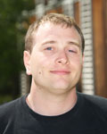

12 Oct 2012
Bernhard Dieber joins the EPiCS team at UNI-KLU

My name is Bernhard Dieber and I have recently started to work in the EPICS project. I am pursuing my PhD at the Alpen-Adria Universität Klagenfurt working in the group of Prof. Bernhard Rinner.
In my research work I am working on resource awareness in visual sensor networks. In my previous project we have been working on a resource-aware sensor network tailored for deployment in areas with no infrastructure. We have built a camera network which is energy autarkic and can be powered from e.g. solar cells. Our use case in this project was the deployment of this network in a national park to detect events ranging from animal activity to intrusion detection, see http://srsnet.lakeside-labs.com. My part in this project was to design a distributed reconfiguration algorithm to configure the network for both, optimal performance and minimal energy demand.
Within the EPICS project I will be working on the resource-aware Middleware for camera networks.
I am looking forward to working with you in this exciting project.